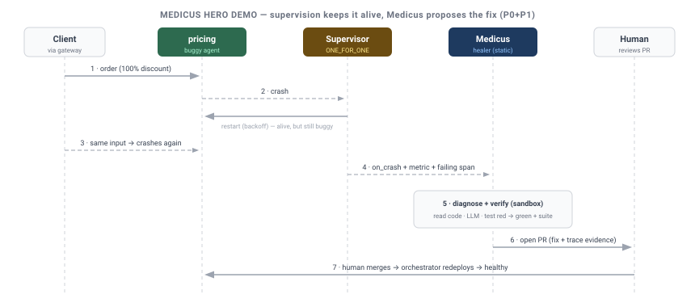

Design: Medicus — Self-Healing Hero Demo¶
Status: DRAFT — for review. Reference demo for the self-healing initiative (self-healing.md).
Author: Sisyphus
Date: 2026-07-04
Scope: demonstrates P0 + P1 only (detect → diagnose → sandbox-verified PR). Not autonomous
deploy — see the honest-framing note below.
The headline: "The runtime that keeps your agents alive — and now proposes the permanent fix." A supervised app hits a real bug. Supervision keeps it running; Medicus watches the telemetry, reads the code, reproduces the failure as a test, verifies a fix in a sandbox, and opens a PR — every step traced and audited. It is the one demo that only a runtime (not an agent framework) can tell.
Why this replaces the Personal Assistant demo¶
The Telegram personal-assistant demo (deferred §M1.8) is a generic "agent framework" showcase — LangGraph/CrewAI do the same, so it sells nothing unique — and it is blocked on unbuilt pieces (a Telegram gateway + the deferred Skills Gateway in civitas-contrib). Medicus instead showcases Civitas's actual moat — supervision + observability (metrics/audit/OTEL) + dynamic lifecycle + fault-tolerance — and it dogfoods the whole stack shipped through v0.6.0 (gateway, streaming, supervision). The Telegram assistant survives as a minor gateway+skills sample later, not the hero.
Honest framing (so it's a win, not an overclaim)¶
- Copilot, not autonomy. The demo ends at a PR a human merges (P0+P1). It does not stage
the autonomous deploy loop (P2+), which carries the caveats Oracle flagged in
self-healing.md. - Reproducible, not live-LLM roulette. The scenario uses a seeded, known bug; the offline path uses a mock LLM with a canned diagnosis so the demo is deterministic on stage. A live LLM is an optional flag, never the default for a recorded/keynote run.
- Prerequisite: a Medicus needs its own audit trail + metrics, so it runs as a static supervised
child (side-stepping the dynamic-spawn wiring gap noted in
self-healing.mdmust-fix #6).
The scenario¶
A small supervised "orders" topology behind the HTTP gateway:
gateway(HTTPGateway) →pricing(buggy) +inventory+ordersagents, under arootsupervisor (ONE_FOR_ONE), with a persistentStateStore, OTEL console exporter, and an audit sink.- The seeded bug:
pricingraises on one specific input — e.g. aKeyError/ZeroDivisionErroron a100%discount code (a plausible off-by-one / missing-guard bug). Normal traffic is fine. medicus— a static supervised child running the P0+P1 loop, with read access to the repo and a sandbox for verification.
The teaching beat: when the bad input arrives, pricing crashes and the supervisor restarts it
(the app never fully dies) — but it keeps crashing on that input, because supervision keeps you
alive, it does not fix logic bugs. That gap is exactly what Medicus closes.

Storyboard (~2 minutes)¶
| Beat | On screen | Shows off |
|---|---|---|
| 1 | Normal orders flow through the gateway; OTEL trace scrolls | Gateway + tracing + multi-agent routing |
| 2 | A 100%-discount order hits pricing → it crashes → supervisor restarts it |
Supervision + backoff (fault-tolerance) |
| 3 | The same input recurs → error-rate spike on pricing; restart budget ticking |
Metrics + the honest limit of restart-only |
| 4 | Medicus fires on on_crash + the metric + the failing OTEL span/audit record |
Observability as first-class input |
| 5 | Medicus reads the traceback + pricing source, asks the LLM for the root cause + minimal fix |
LLM reasoning over real telemetry + code |
| 6 | Medicus writes a test from the real failing input, runs it in a sandbox: red → applies fix → green + full suite | Verification anchored to reality (D8) |
| 7 | Medicus opens a PR with the diff, the trace evidence, and its reasoning — its own steps fully OTEL-traced + audited | The copilot payoff + immutable audit |
| 8 | Human merges → orchestrator redeploys → 100%-discount order now succeeds |
Reversible, human-gated deploy (D1/D4) |
Punchline: "The supervisor kept it running. Medicus found the root cause, proved the fix, and opened the PR — with a full audit trail. A human clicked merge."
Architecture (demo realization of P0+P1)¶
- Reuses, doesn't rebuild: the existing runtime, gateway, supervision,
on_crash, metrics, audit, and OTEL — no new core is required for the demo itself. - Medicus agent (in
examples/or acivitas-contrib/medicuspackage, notcivitas/core): the deterministic controller + the diagnosis step (LLM) driven only by typed signals (D9). - Tools (≈4 small
ToolProviders, sandbox-scoped):read_file,run_tests,write_file,open_pr(git) — or MCP filesystem/bash servers. - Sandbox: fabrica bubblewrap with the repo mounted; healer/CI paths read-only (D-Q5).
- LLM: mock provider (canned diagnosis for the seeded bug) by default;
--liveflag for a real provider.
Build plan¶
examples/self_healing/app/— the seeded orders topology (buggypricing) +topology.yaml.examples/self_healing/medicus.py— the P0+P1 agent (controller + diagnose + verify + PR), static child in the topology.- The 4 sandbox-scoped tools + a mock LLM with the canned diagnosis.
examples/self_healing/README.md+ arun.shthat drives the exact storyboard (offline by default,--liveoptional).- A short recorded walkthrough (OTEL trace + the resulting PR) for the docs site.
Prerequisites & dependencies¶
- Medicus runs as a static child (avoids the dynamic-spawn audit/metrics gap; fixing that gap is still tracked separately).
- fabrica for the sandbox (
fabrica-context); degrades to a subprocess-with-tmpdir for the offline demo. - No new core dependency; LLM via existing
civitas-contribproviders (mock for the default run).
Success criteria¶
-
run.shreproduces beats 1–8 deterministically offline (mock LLM), on a clean checkout. -
pricingcrashes on the seeded input and the supervisor restarts it (visible in OTEL/metrics). - Medicus produces a real diff that turns a real reproducing test red → green + full suite.
- Medicus opens a PR (or writes a patch + PR body) with trace evidence; every Medicus action is in the audit trail.
- Nothing auto-deploys; the merge + redeploy is explicitly human/orchestrator-driven.
-
--liveruns the same flow against a real LLM.
Relationship to other artifacts¶
self-healing.md— the architecture/feasibility + safety design; this doc is its P0+P1 reference demo. All framing (staged autonomy, safety floor, D1 orchestrator-first) is inherited.examples/research_assistant.py— kept as the "multi-agent orchestration" example; Medicus is the "self-healing runtime" flagship.
Non-goals (demo)¶
- No autonomous deploy / rollback on stage (P2+ is out of the demo).
- No arbitrary-bug fixing claim — the demo is a seeded, bounded scenario.
- No Telegram/personal-assistant surface.